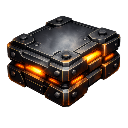

Wiki / Stat Reference / Armor Modules / Bastion Composite Plate MK I

Armor Modules
Bastion Composite Plate MK I
Brute-force military slab; heavy, slow, and very hard to break.
- Armor Type
- Composite Armor
- Module Tier
- Tier 1 Basic
- Faction
- Iron Vanguard
- Scope
- Outpost
Base Armor Health
1,300
Base Kinetic Resistance
0.1
Base Energy Resistance
0
Base Mass
4
Defense
- Base Armor Health
- 1,300
- Base Energy Resistance
- 0
- Base Explosive Resistance
- 0
- Base Kinetic Resistance
- 0.1
- Base Alien Resistance
- 0
- Base Void Resistance
- 0
- Base Plasma Resistance
- 0.05
- Base Stasis Resistance
- 0
- Health Buff
- 0
Offense
- Base Shield Bypass
- 0
- Base Armor Bypass
- 0
Mobility & Sensors
- Base Mass
- 4
Slots & Capacity
- Max Stack Count
- 4
Effects & Buffs
- Speed Buff
- -0.026
- Damage Buff
- 0
- Percent Based
- No
Repair
- Base Repair Time
- 1m 30s
- Repair Cost Minerals
- 50
- Repair Cost Helium
- 5
- Repair Cost Antimatter
- 0
Cost & Build Time
- Build Time
- 1m 30s
- Build Cost Minerals
- 250
- Build Cost Helium
- 25
- Build Cost Antimatter
- 0
- Lab Time Total
- 3m
Requirements
- Required Lab Level
- 1
- Required Player Level
- 1
- Limited Edition
- No
- Requires Research
- Yes
- Required Research ID
- Bastion Composite Plate MK I
Mark Levels
| Mark Level | Armor Health Multiplier | Resistance Multiplier | Mass Multiplier | Unlock XP Cost | Unlock Coin Cost |
|---|---|---|---|---|---|
| 1 | 1 | 1 | 1 | 500 | 400 |
| 2 | 1.1875 | 1.05 | 1.05 | 1,000 | 800 |
| 3 | 1.375 | 1.1 | 1.1 | 1,500 | 1,200 |
| 4 | 1.5625 | 1.15 | 1.15 | 2,000 | 1,600 |
| 5 | 1.75 | 1.2 | 1.2 | 2,500 | 2,000 |